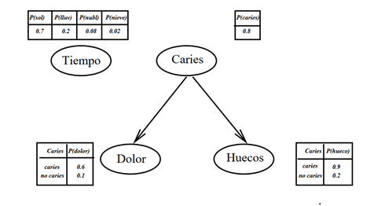

INVESTIGACIÓN REDES BAYESIANAS
Introducción teórica
Una red bayesiana es un modelo que agrega los efectos entre los atributos del dominio y los pondera utilizando una distribución de probabilidad. Un estado entre diferentes pares de variables que se pueden conectar en una relación padre-hijo en un gráfico acíclico dirigido [1].
Las redes bayesianas representan relaciones tanto estructurales como cuantitativas. El principal interés de estos modelos es que permiten utilizar la misma representación tanto para operaciones de predicción como de explicación.
Los métodos de construcción de redes bayesianas pueden basarse en las propiedades de independencia condicional de diferentes estructuras o teniendo en cuenta las propiedades de distribución implícitas de cada estructura.
Los métodos basados en propiedades de distribución se dividen además en métodos basados en información, métodos bayesianos y métodos basados en principios MDL. Las redes que funcionan con principios similares a los clasificadores bayesianos “ingenuos” también se pueden utilizar para la clasificación [1].
Conceptos básicos
Previo a la explicar de que se trata las redes bayesianas es necesario contemplar los siguientes conceptos de teoría de grafos y teoría de la probabilidad.
Arco: Es un par ordenado (X, Y).
- El un arco (X,Y) se indica mediante una flecha de X a Y.
Grafo dirigido: Es un par G = (N, A) donde N es un conjunto de nodos y A un conjunto de arcos definidos sobre los nodos.
Grafo no dirigido: Es un par G = (N,A) donde N es un conjunto de nodos y A un conjunto de arcos no orientados (es decir, pares no ordenados (X,Y)) definidos sobre los nodos.
Camino: Es una secuencia ordenada de nodos (Xi1, .. , Xir) tal que ” j = 1, ..., r-1.
Ciclo: Es un camino no dirigido que empieza y termina en el mismo nodo X.
Grafo acíclico: Es un grafo que no contiene ciclos.
Padre: X es un padre de Y si y sólo si existe un arco X ® Y. Se dice también que Y es hijo de X.
Antepasado o ascendiente. X es un antepasado o ascendiente de Z si y sólo si existe un camino dirigido de X a Z.
Conjunto ancestral de un nodo X: Es un conjunto que contiene a X y a todos sus antepasados.
Descendiente: Z es un descendiente de X si y sólo si X es un antepasado de Z.
- Al conjunto de los descendientes de X se denotará por de(X).
Variable proposicional: Es una variable aleatoria que toma un conjunto exhaustivo y excluyente de valores.
Los nodos de una red bayesiana: Deben ser variables proposicionales (toman un conjunto exhaustivo y excluyente de valores).
Definición Redes Bayesianas
Una red bayesiana es una representación gráfica de dependencias para razonamiento probabilístico, donde los nodos representan variables aleatorias y los círculos representan dependencias directas entre variables.
Por lo tanto, una red bayesiana es:
Un conjunto de variables proposicionales, V.
Un conjunto de relaciones binarias definida sobre las variables de V, E.
Una distribución de probabilidad conjunta sobre las variables de V.
Basado en esta idea, las redes bayesianas (o redes de creencias) son una forma práctica y compacta de representar el conocimiento difuso.
- Una red bayesiana es un gráfico dirigido acíclico que consta de:
Un conjunto de nodos, uno por cada variable aleatoria “en el mundo”.
Un conjunto de arcos dirigidos que conectan nodos; si hay un arco de X a Y, decimos que X es padre de Y (padre(X) significa el conjunto de v.a.s que son padres de X).
Cada nodo Xi contiene una distribución de probabilidad condicional P(Xi|parents(Xi)).
Intuitivamente, el arco entre X e Y representa una red bayesiana con efecto directo de X sobre Y.
Determinar las dependencias inmediatas (es decir, la topología de la red) es tarea del experto en el dominio.
Las Redes Bayesianas constan de:
La parte cualitativa describe las relaciones entre las diferentes variables.
La parte cuantitativa de la fuerza de estas relaciones se describe utilizando probabilidades condicionales.
Ejemplo
Red Bayesiana (Russell y Norvig)

Descripción
La caries dental es la causa directa del dolor y las caries
Considerando que la caries, el dolor y el espacio son condicionalmente independientes
El tiempo es independiente de otras variables.
No es necesario indicar la probabilidad de caries, negación del dolor.
Ejemplos de aplicaciones de RB en empresas:
Microsoft
• Answer Wizard (Office)
• Diagnóstico de problemas de usuario (Aladdin)
• Home Health en la red de Microsoft (MSN)
Intel
• Diagnóstico de fallos de procesadores
HP
• Diagnóstico de problemas de impresora
Nokia
• Diagnóstico de redes celulares
Nasa
• Sistema de ayuda a la decisión en misiones espaciales
Referencias Bibliográficas
[1] R. S. i. Solé, “Redes bayesianas”, Uoc.edu. [En línea]. Disponible en: https://openaccess.uoc.edu/bitstream/10609/138187/26/Data%20mining_M%C3%B3dulo%207_Redes%20bayesianas.pdf. [Consultado: 19-may-2023]
[2] J. L. Ruiz Reina, “Tema 8: Introducción a las Redes Bayesianas”, Cs.us.es. [En línea]. Disponible en: https://www.cs.us.es/cursos/ia2-2005/temas/tema-08.pdf. [Consultado: 19-may-2023].
[3] “Redes Bayesianas”, Ull.es. [En línea]. Disponible en: https://fdoperez.webs.ull.es/doc/Conocimiento5.pdf. [Consultado: 20-may-2023].
[4] L. R. B. no T. M. S. Q. P. I. C. de Dos variables y y. un A. D. la P. H. la segunda., “Ejemplo 1. La red bayesiana más simple”, Uma.es. [En línea]. Disponible en: http://www.lcc.uma.es/~eva/aic/Redes%20Bayesianas.pdf. [Consultado: 20-may-2023].